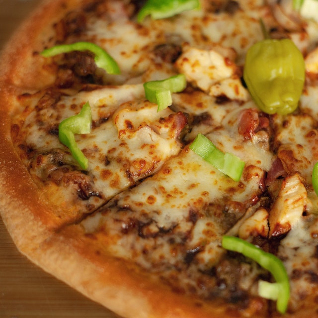

Pizza Recipe
“Bloom” the yeast by sprinkling the sugar and yeast in the warm water. Let sit for 10 minutes, until bubbles form on the surface.
In a large bowl, combine the flour and salt. Make a well in the middle and add the olive oil and bloomed yeast mixture. Using a spoon, mix until a shaggy dough begins to form
Once the flour is mostly hydrated, turn the dough out onto a clean work surface and knead for 10-15 minutes. The dough should be soft, smooth, and bouncy. Form the dough into a taut round